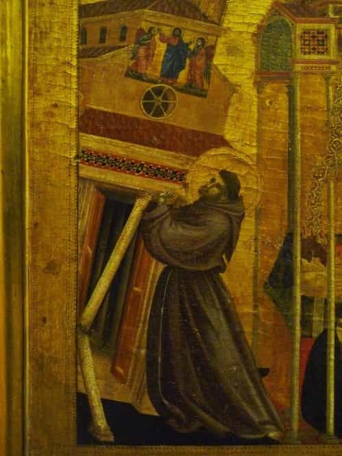

Whether you follow a priest, pastor or reverend, there are signs to look for in order to know if he really wants to help his community or if he just wants to get as many followers as possible by pandering to them.
Nowadays it’s hard to find decent spiritual leaders who really care about their communities and followers. Religion has been turned into a money-making machine, leaving faithful Christians lost in their quest to find a messenger from God who is not trying to take advantage of his role for his own gains.
Is there any way to check for signs that your current priest or pastor is a good one that is masculine, genuinely worries about his community, and isn’t affected by the Cultural Marxist cancer?
Below I will give you some insights that are helpful to know when looking for a good preacher and to also check if a church only wants your money. We already have too many false prophets becoming rich with the word of the Lord and not giving back to their followers. This has got to stop.
Trust in the Lord with all thine heart; and lean not unto thine own understanding. – Proverbs 3:5
A great preacher doesn’t need to know the word of the Lord by tongue, because he already has it all in his heart. He doesn’t try to over-complicate his sermon with fancy talking or complicated subjects that make the average Joe feel small or intimidated. He makes his sermons as easy as possible to the average person, who is not so cultured in theology, to relate to them and understand them.
To make it easier for everyone to understand the point he is trying to make, he combines old biblical stories and difficult ancient religious text with daily issues we face today. This combination of the familiar past and present allows the listener to relate to those old biblical stories of centuries ago.
Iron sharpeneth iron; so a man sharpeneth the countenance of his friend. – Proverbs 27:17
Like a wise entrepreneur uses his profits first to improve his corporation before using for himself, a good preacher uses the donations he received first to improve his sermons and his church. Most of the church money should be used to better equip the church, give more comfort to its people, and help those in need.
For bodily exercise profiteth little: but godliness is profitable unto all things, having promise of the life that now is, and of that which is to come. – Timothy 4:8
He knows boys can’t handle staying idle for too long and that they are always in need of some manly activity to canalize all their energy and frustrations. Otherwise, his flock of boys and men will get easily bored. This is why a good masculine preacher proposes every now and then some masculine activities for the boys during the weekend, such as Camping, hunting, soccer, football, baseball, and so on.
A good leader knows that their masculine followers are different from their female counterparts. He knows each one needs to canalize their frustrations and energy in different ways.
He that spareth his rod hateth his son: but he that loveth him chasteneth him betimes. – Proverbs 13:24
A real masculine and godly preacher doesn’t care if he is going to lose some of his flock when preaching sermons about sensitive issues or hot potato topics. What he really cares about is to bring the truth and real wisdom of the Lord at all costs. For him it doesn’t matter if some people are going to be upset.
If your preacher avoids preaching about sensitive topics, such as the role of patriarchy, debt, toxic friendships, the dangers of sodomy, and fake Christians, it means that he is not an old-time preacher and is more like a motivational guru than a spiritual leader.
A masculine preacher doesn’t let his audience control him or his message. If this is not the case, it’s likely that your local preacher and his church only cares about having as many followers as possible. Instead of being a preacher, he is more like a motivational guru who only wants to gather as many followers as possible by only preaching about cheerful, SJW-friendly, and motivational passages of the Bible.
But I suffer not a woman to teach, nor to usurp authority over the man, but to be in silence. – 1 Timothy 2:12
A good preacher does not cater to his female audience. He teaches them to be sweet obedient followers of their husbands. He also taught their male follower to stop worshiping their wives and carry themselves as the captains of their respective households rather than be wimps who are submissive to their wives.
But to do good and to communicate forget not: for with such sacrifices God is well pleased. – Hebrews 13:16
When I was living in Arkansas, I knew a wise old preacher who allowed a family that just lost their house in a fire to live in the church’s spare rooms while they were looking for another place to live. A good preacher will find a way to help those who are going through difficult times. He might not be able to help them directly but he will try his best to advise them about dealing with issues such as debt, family, relationships, child disobedience, career, and so on.
And whatsoever ye do, do it heartily, as to the Lord, and not unto men; – Colossians 3:23
Like a good leader in any other area, it’s indispensable that a preacher is charismatic and put effort into his sermon and way of talking. Everyone should feel his enthusiasm through his preaching and the way he carries himself. A good preacher make his followers feel infected by his euphoric rhetoric to the point that his followers become enthusiastic about it as well.
He uses the KJV version of the Bible
This one isn’t a requirement, but more of a correlation I found between most good English-speaking preachers. They usually like to use the KJV version instead of the new ones.
A good preacher uses the KJV version and preaches in a way that makes it easy for the average Joe to get the point and assimilate it into his life and daily challenges. He is able to mix the old with the modern life as stated in the first sign to look for in this article.

When looking for a good spiritual leader, remember this: a bad preacher tries to twist God’s word to fit into the crazy modern Cultural Marxist agenda and politically correct narrative we live in today. He is nothing but a puppet of his followers, especially women.
Read More: Swedish Clergy Has Stopped Referring To God As Male